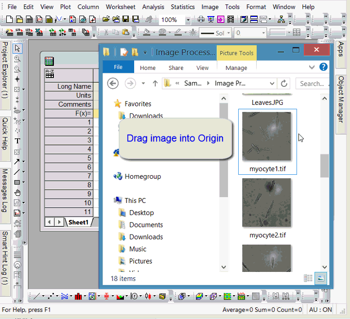

FAQ-681 Originに画像をインポートするには？
最終更新日：2022/1/11
Image-Graph-Origin
画像ファイルは、Originのグラフ、行列、イメージウィンドウ（Origin 2022以降）にインポートできます。さらに、ワークシートセルに挿入することもできます。
イメージウィンドウに画像をインポートする
Origin 2022以降利用可能になったイメージウィンドウは、画像またはビデオの編集を目的とした単一ページのウィンドウです。
- ファイル：新規作成：イメージを選択して、画像/動画または複数画像ファイル（画像スタックのインポート）を選択します。
- イメージウィンドウ上で右クリックしてインポートを選択して、空のイメージウィンドウに画像や動画をインポートします。
- Originのワークスペースにファイルをドラッグアンドドロップして、画像や動画をインポートします。
詳細は、次のトピックをご覧ください。
行列に画像をインポートする
Origin 2022より前のバージョンでは、画像の操作と分析は、行列データに対して実行します。画像分析を実行する場合は、行列ウィンドウを使用します。各行列ブックには最大1,024枚のシートを含めることができ、各シートには65,000以上のマトリックスオブジェクトを含めることができます。
- 新しい行列ウィンドウを開き、データ：ファイルからインポート：イメージファイルを行列へインポートを選択します。
- 古いバージョンの場合は、ファイル：インポート：ファイルから画像を挿入を選択します。
- 行列ウィンドウは、画像およびデータモードをサポートしています。表示：データモード (Ctrl+Shift+D) あるいは、表示：イメージモード (Ctrl+Shift+I) を選択します。
- ドラッグアンドドロップで行列に画像をインポートする場合、行列ウィンドウ内に画像ファイルをドロップします。Origin 2022以降のバージョンでは、ワークスペースの空いた領域に画像ファイルをドロップした場合イメージウィンドウにインポートされます。ワークスペースの空き領域に画像ファイルをドロップした際に、行列ウィンドウを開いてインポートする動作に変更する場合、システム変数@IMGD=0を設定します。
- 行列オブジェクトは、スライダー付きのサムネイル画像として表示できます。詳細は、イメージサムネイルとスライダーを参照してください。
- 
詳細は、次のトピックをご覧ください。
グラフに画像をインポートする
- グラフウィンドウをアクティブにして、挿入：ファイルからの画像を選択します。
- 古いバージョンの場合は、ファイル：インポート：ファイルから画像を挿入を選択します。
- 2021bの場合、画像をグラフレイヤの背景として挿入するか尋ねられます。
詳細は、次のトピックをご覧ください。
ワークシートセルに画像を挿入する
ワークシートセル上で右クリックしてファイルからイメージを挿入を選択します。
詳細は、ワークシートセルにグラフ、画像、他のオブジェクトを挿入するを参照してください。
キーワード:画像分析, 画像のインポート